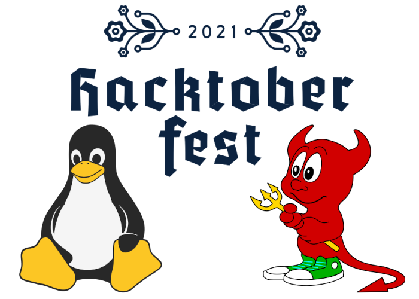

In our first meeting of October, we learned about and discussed our plans for Hacktoberfest, an event which its host Digital Ocean describes as a “month-long celebration of open source software1.” Now in its eighth year, the event invites participants to make contributions to opted-in repositories on GitHub or GitLab. The first 50,000 people to make four approved pull requests earn a (free!) t-shirt and stickers. Professor Bui gave a presentation on how to use Git, a distributed version control system that is integral to many software projects and to the Hacktoberfest workflow.
In addition to promoting contributions to projects broadly, our club has created a repository in which members can collaborate on solving a series of programming challenges. Control-Alt-Delete invites programmers to complete five challenges to help Tux escape Beastie’s jail! Welcome contributions include new solutions, improvements to existing solutions, testing, documentation, and additions to the story. We’ve already had some creative solutions from members in languages such as JavaScript, Haskell, and C. Happy Hacktoberfest – now get hacking!
